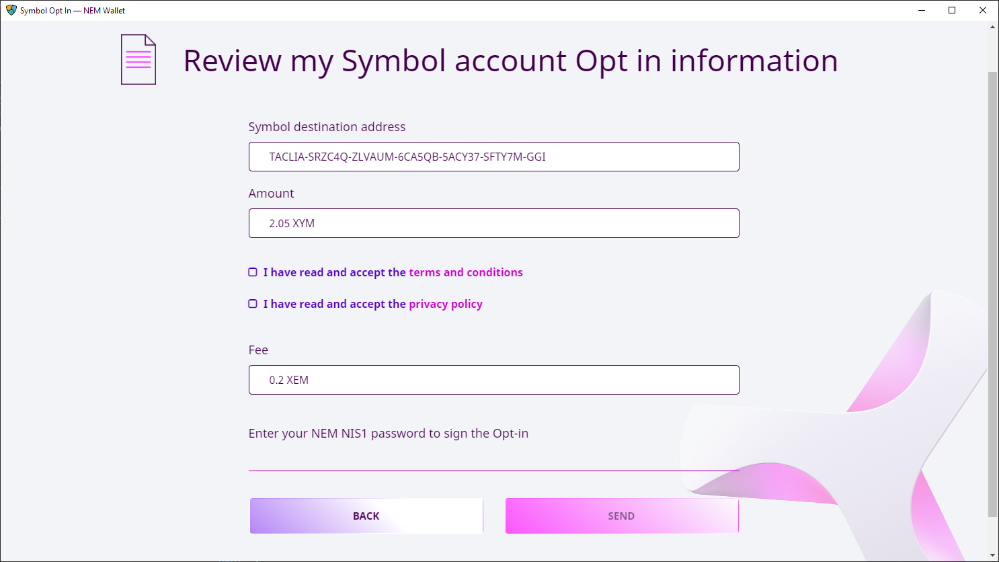

This guide explains how to enroll in the opt-in process once Symbol has launched (this is, after March 12, 2021).
If you opted-in before the launch and you are looking to retrieve your new Symbol currency, read the ロンチ前のオプトインから XYM を取得する guide instead.
NEM NIS1 is the original blockchain offering from NEM, created by the community, and has been running since 2015.
Symbol is the next-generation blockchain from NEM, rewritten from scratch, and launched in March, 2021.
To quickstart Symbol's adoption, an opt-in process was established which awarded one XYM in the new Symbol blockchain for every XEM (NIS1's native currency) held in the NIS1 blockchain.
On March 12th, 2021 the NIS1 Snapshot took place: When the NIS1 blockchain reached block height 3'105'500 a picture was taken of all accounts and their assets.
Then, on March 16th, 2021 the Symbol blockchain was launched.
After the launch, all accounts that held at least 2 XEM at the snapshot can still reclaim an equal amount of XYM, to be transferred to a Symbol account.
This process is called the opt-in, and will be open for some amount of time after the launch. The exact length of this window is yet to be defined.
This guide explains how to participate in the opt-in.
The opt-in process is conducted entirely from within the NEM Wallet, but first, you need to retrieve the public key of the Symbol account where you want to receive the XYM:
Download and install the Symbol Desktop Wallet for your platform, if you don't already have it.
Please note that this is different from the NEM Wallet used to interact with the NIS1 blockchain.
Create the Symbol account where you would like to receive the assets, if you don't already have one.
Read the アカウントの作成 guide to know how to do this.
Find your account's public key in the Accounts tab. You will need it later.

Use the copy button to the right of the key (do not try to select and copy the key's text directly as it is too long and it is truncated).
Now that you know where do you want your XYM transferred, you can start the opt-in process:
Download and install the NEM Wallet for your platform, if you don't already have it.
Make sure you have installed at least version 2.6.0, so the post-launch opt-in module is present.
Log in to the account containing XEM at the snapshot.

Once you are logged in to your NIS1 account, click on the Symbol opt-in module in the Services tab:
Click on the READY button:
Select the account you want to opt-in. If you only have one account in the wallet, there will only be one option.

The screen shows a summary of the process and highlights any problems, if there are any.
Remember that the Amount to claim is the amount present in the account at the snapshot.
If everything is right, click on START OPT-IN.
Enter your Symbol account's public key. This is the public key your copied in Step 3 above.

Once you enter a valid public key, more details will appear. Check that the Symbol account's address corresponds to the desired account and click on NEXT.
Final verification and acceptance.
Do one last check of the destination Symbol account and balance.
Accept the terms and conditions and the privacy policy.
The opt-in process involves registering a transaction on the NIS1 blockchain. This has a fee, shown on this summary screen.
Enter your NEM Wallet password to confirm the process.
Click on SEND.
If the opt-in is successfull you will be taken to the initial Summary screen where you can see the status of the process:

Since it can take more than a week for the XYM to be transferred, you can come back to this screen to check on the opt-in status.
This is a short list of items to check should you encounter any problem when opting-in your accounts.
Check that the balance on your NIS1 account was at least 2 XEM at the time of the snapshot.
Check that the NIS1 account has not already opted-in pre-launch (Following the ロンチ前のオプトインから XYM を取得する guide).
Check that the NIS1 account has not already opted-in post-launch.
Check that the destination Symbol account is not a リモートハーベスティング account.
The NEM Helpdesk can help you if everything else fails:
Send an email to support@nem.group
 Last updated by
Last updated by {kind=link}
{kind=link}
{kind=link}
{kind=link}